विश्व-राजनीति के बारे में पढ़ते हुए अक्सर हमारा सामना युद्ध, शांति, राज्य शक्ति के उत्थान-पतन और अंतर्राष्ट्रीय संगठनों के मुद्दों से होता है। लेकिन 1960 के दशक से पर्यावरण और प्राकृतिक संसाधनों (Environment and Natural Resources) के मसले ने वैश्विक राजनीति में केंद्रीय स्थान हासिल कर लिया है।
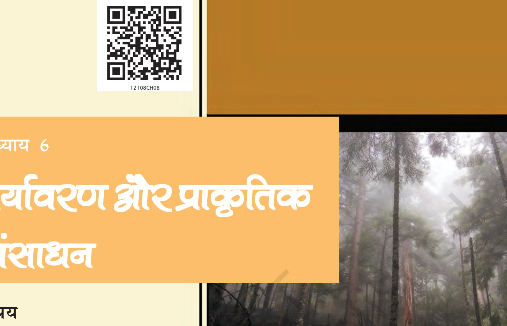
एनसीईआरटी कोलाज व विवरण (NCERT पृष्ठ 81): चित्र में वैश्विक पर्यावरण ह्रास, वनों की कटाई, प्रदूषण और जल संकट की वैश्विक तस्वीरों को दिखाया गया है।
पर्यावरण के मुद्दे किसी एक देश की सीमा तक सीमित नहीं हैं। ये पूरे विश्व समुदाय को प्रभावित करते हैं:
- कृषि योग्य भूमि का ह्रास: विश्व भर में उपजाऊ कृषि भूमि में कमी आ रही है, चरागाह नष्ट हो रहे हैं और जल-स्रोतों का प्रदूषण बढ़ रहा है।
- पेयजल का गंभीर संकट: विकासशील देशों में करोड़ों लोगों को पीने का साफ पानी उपलब्ध नहीं है, जिसके कारण जल जनित बीमारियां फैलती हैं।
- वनों की तेजी से कटाई (Deforestation): वनों की कटाई से जैव-विविधता (Biodiversity) नष्ट हो रही है और जलवायु संतुलन बिगड़ रहा है।
- ओजोन परत का क्षरण (Ozone Depletion): वायुमंडल में समताप मंडल (Stratosphere) में ओजोन परत का पतला होना, जिससे पराबैंगनी किरणें (UV Rays) सीधे पृथ्वी तक आ रही हैं।
- समुद्री प्रदूषण (Coastal Pollution): तटीय क्षेत्रों में मानवीय बस्तियों और औद्योगिक कचरे से समुद्र का पर्यावरण प्रदूषित हो रहा है।
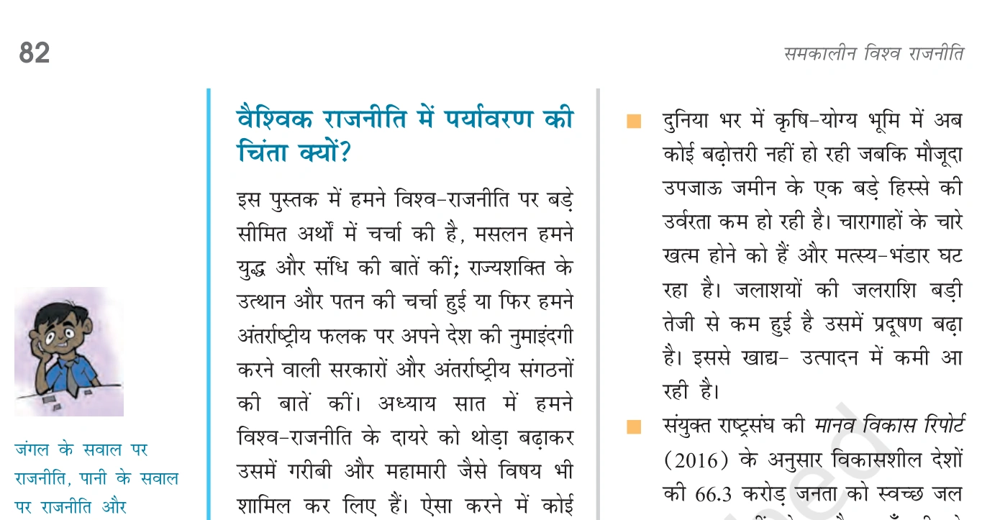
एनसीईआरटी चित्र विवरण (NCERT पृष्ठ 82): पृथ्वी के अस्तित्व पर गहराता संकट और पर्यावरण प्रदूषण के वैश्विक आंकड़े।
पर्यावरण सुरक्षा को अंतर्राष्ट्रीय मंच पर उठाने में निम्नलिखित वैश्विक पहलों की महत्वपूर्ण भूमिका रही:
- क्लब ऑफ रोम (Club of Rome 1972): वैश्विक विचारकों के समूह ने 1972 में 'लिमिट्स टू ग्रोथ' (Limits to Growth) नामक पुस्तक प्रकाशित की, जिसने संसाधनों के अति-दोहन पर दुनिया का ध्यान खींचा।
- अवर कॉमन फ्यूचर (Our Common Future 1987): ब्रंटलैंड रिपोर्ट (Brundtland Report) ने चेतावनी दी कि विकास के मौजूदा ढर्रे भविष्य में पोषणीय (Sustainable) नहीं हैं।
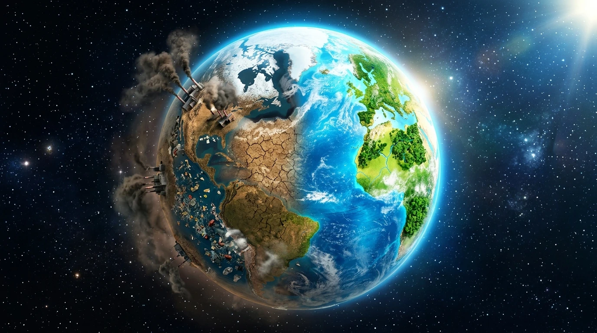
विशेष चित्र विवरण: हमारी पृथ्वी जो एक साझी विरासत है, आज मानवीय गतिविधियों और प्रदूषण के कारण गंभीर खतरे में है।
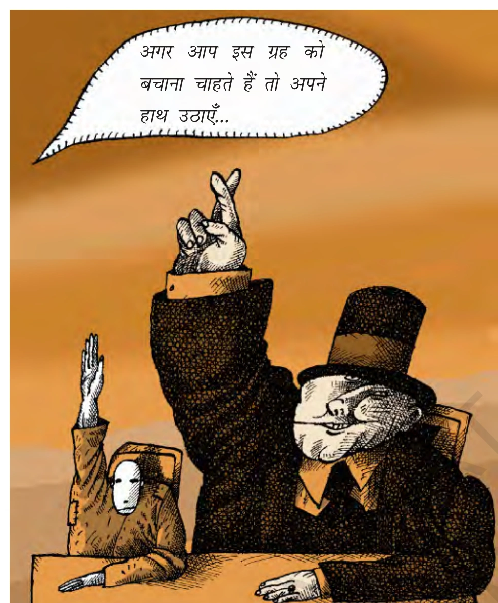
एनसीईआरटी कार्टून: पृथ्वी सम्मेलन 1992 और एजेंडा 21 (NCERT पृष्ठ 84):
1992 में ब्राजील के रियो डी जेनेरो में हुए 'पृथ्वी सम्मेलन' (Earth Summit) में 170 देशों ने भाग लिया। यहाँ 'एजेंडा 21' (Agenda 21) और 'टिकाऊ विकास' (Sustainable Development) का सिद्धांत अपनाया गया।
टिकाऊ विकास (Sustainable Development): ऐसा विकास जो वर्तमान पीढ़ी की आवश्यकताओं को पूरा करे बिना भविष्य की पीढ़ियों की अपनी आवश्यकताओं को पूरा करने की क्षमता से समझौता किए।
विश्व के कुछ हिस्से और क्षेत्र किसी एक संप्रभु राज्य के क्षेत्राधिकार से बाहर होते हैं। इसलिए उनका प्रबंधन अंतर्राष्ट्रीय समुदाय द्वारा साझा रूप से किया जाता है। इन्हें 'साझी संपदा' (Global Commons) या 'मानवता की साझी विरासत' कहा जाता है।
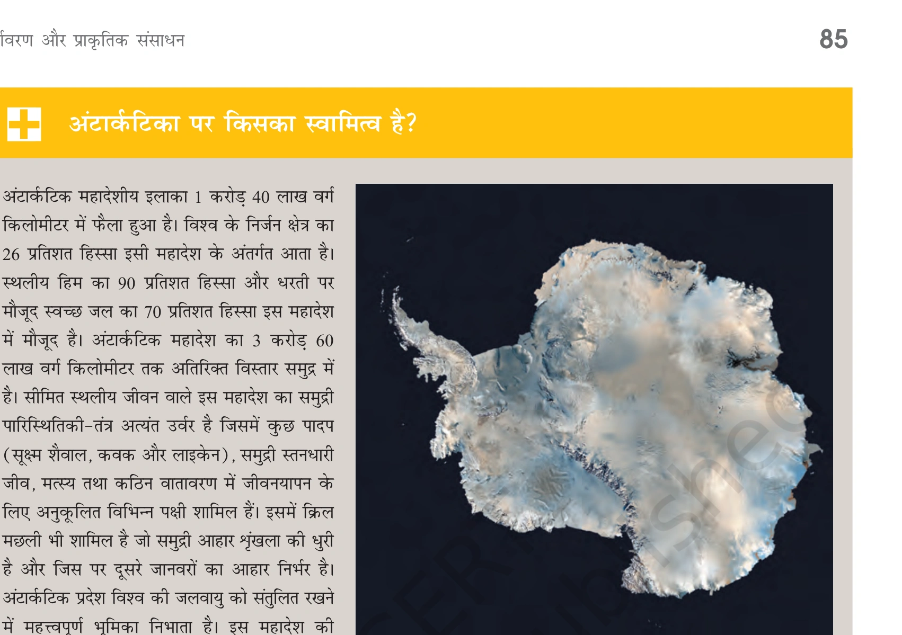
एनसीईआरटी साझी संपदा (Global Commons - NCERT पृष्ठ 85):
वैश्विक साझी संपदा के अंतर्गत चार प्रमुख क्षेत्र आते हैं:
- पृथ्वी का वायुमंडल (Earth's Atmosphere)
- अंटार्कटिका (Antarctica)
- समुद्री सतह / खुला समुद्र (High Seas / Ocean Floor)
- बाहरी अंतरिक्ष (Outer Space)
(i) वायुमंडल और बाह्य अंतरिक्ष (Atmosphere & Outer Space): अंतरिक्ष की सीमा को दर्शाने के लिए पृथ्वी के चारों ओर 100 किमी की ऊँचाई पर एक काल्पनिक रेखा मानी जाती है जिसे 'कर्मन रेखा' (Karman Line) कहते हैं, जिसके बाद बाह्य अंतरिक्ष शुरू होता है।
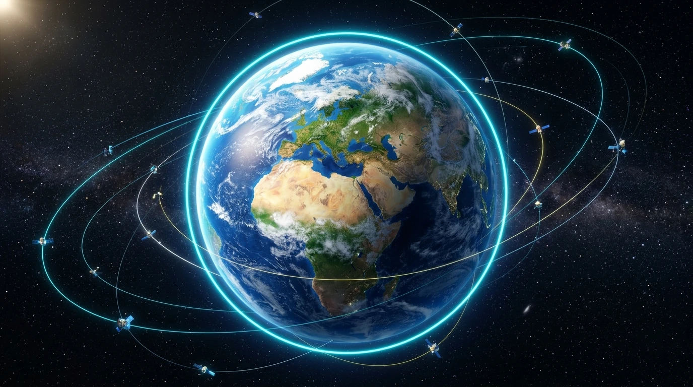
कर्मन रेखा (Karman Line): पृथ्वी के चारों ओर वायुमंडल और बाह्य अंतरिक्ष की सीमा को दर्शाती नीली आभा वाली रेखा।
(ii) अंटार्कटिका महाद्वीप (Antarctica): यह धरती के दक्षिण में स्थित विशाल बर्फ से ढका महाद्वीप है। 1959 की अंटार्कटिका संधि के अनुसार, यह किसी भी देश के अधिकार क्षेत्र में नहीं है। यहाँ भारत के 'मैत्री' और 'भारती' अनुसंधान केंद्र स्थित हैं।
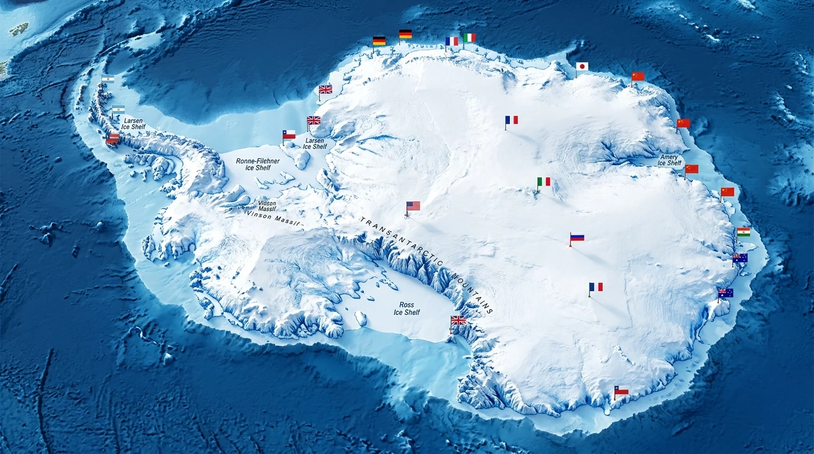
अंटार्कटिका का विस्तृत मानचित्र: विभिन्न देशों के वैज्ञानिक अनुसंधानों और पर्यावरण अनुसंधान केंद्रों के स्थान।
(iii) समुद्र तल और खुला समुद्र (High Seas & India Context): किसी देश के तट से 200 नॉटिकल मील की दूरी (EEZ) के बाद का क्षेत्र 'खुला समुद्र' (High Seas) कहलाता है। भारत के संदर्भ में हिंद महासागर, अरब सागर और बंगाल की खाड़ी के बाहरी हिस्से इसके बड़े उदाहरण हैं।
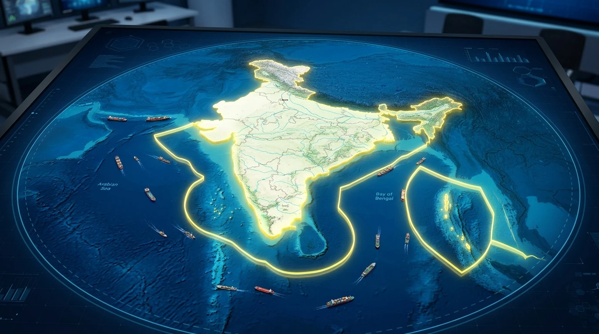
भारत के नक्शे के संदर्भ में खुला समुद्र (High Seas): तट रेखा के समीप पीली सीमा (EEZ) और उसके बाहर फैला गहरा खुला समुद्र।
साझी संपदा की सुरक्षा के लिए कई महत्वपूर्ण अंतर्राष्ट्रीय समझौते और संधियां की गई हैं:
- अंटार्कटिका संधि (Antarctica Treaty 1959): अंटार्कटिक महाद्वीप पर सैन्य गतिविधियों, परमाणु परीक्षणों और कचरा निपटाने पर रोक लगाती है।
- मॉन्ट्रियल प्रोटोकॉल (Montreal Protocol 1987): ओजोन परत को नुकसान पहुँचाने वाले क्लोरोफ्लोरोकार्बन (CFC) के उत्पादन और उत्सर्जन को रोकने के लिए ऐतिहासिक समझौता।
- अंटार्कटिक पर्यावरण प्रोटोकॉल (Environmental Protocol 1991): अंटार्कटिका को पर्यावरण संरक्षण के लिए एक प्राकृतिक रिजर्व घोषित किया गया।
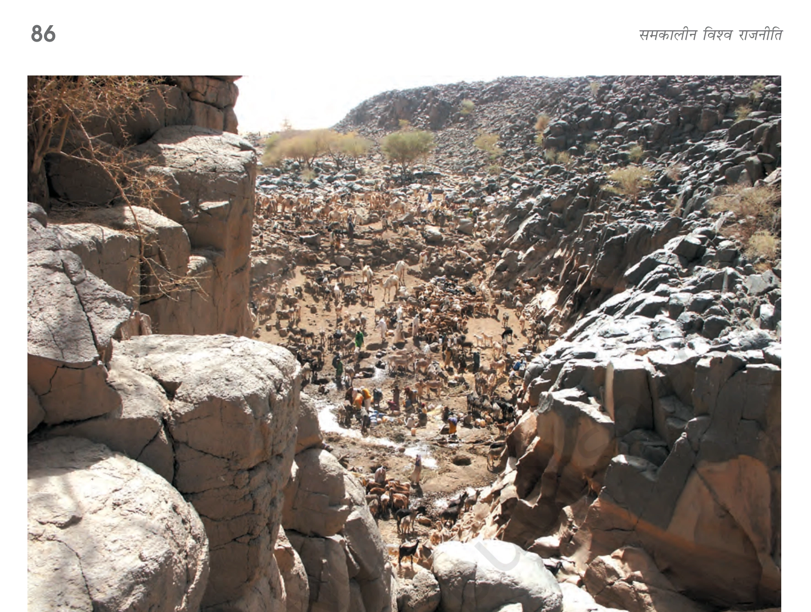
एनसीईआरटी कार्टून: पर्यावरण शरणार्थी और 1970 का अफ़्रीकी अकाल (NCERT पृष्ठ 86):
1970 के दशक में अफ्रीका में सूखे के कारण 5 देशों की उपजाऊ जमीन बंजर हो गई। इससे पर्यावरण शरणार्थी (Environmental Refugees) पैदा हुए।
एनसीईआरटी पाठ्यपुस्तक वक्तव्य: "यह जायज़ सिद्धांत है! हमारे देश में जारी आरक्षण की नीति की तरह! विकसित देशों ने ज्यादा प्रदूषण फैलाया है, इसलिए उन्हें पर्यावरण सुधार की ज्यादा जिम्मेदारी उठानी चाहिए।"
वैश्विक पर्यावरण की सुरक्षा को लेकर उत्तरी गोलार्द्ध के अमीर विकसित देशों और दक्षिणी गोलार्द्ध के गरीब विकासशील देशों का दृष्टिकोण अलग-अलग रहा है। इसी मतभेद से 'साझी परंतु अलग-अलग जिम्मेदारियां' (Common But Differentiated Responsibilities - CBDR) का सिद्धांत उभरा।
1992 के रियो सम्मेलन की घोषणा पत्र में स्वीकार किया गया कि:
- ऐतिहासिक प्रदूषण की जिम्मेदारी: पर्यावरण में हुए अधिकांश नुकसान के लिए विकसित देश (अमीर देश) जिम्मेदार हैं क्योंकि उन्होंने लंबे समय तक औद्योगिकीकरण करके वैश्विक प्रदूषण फैलाया है।
- विकासशील देशों की स्थिति: विकासशील देशों का औद्योगिकीकरण अभी शुरुआती चरण में है, इसलिए उन पर प्रदूषण कम करने की वैसी ही पाबंदियां लगाना अनुचित होगा जो विकसित देशों पर लगाई जाती हैं।
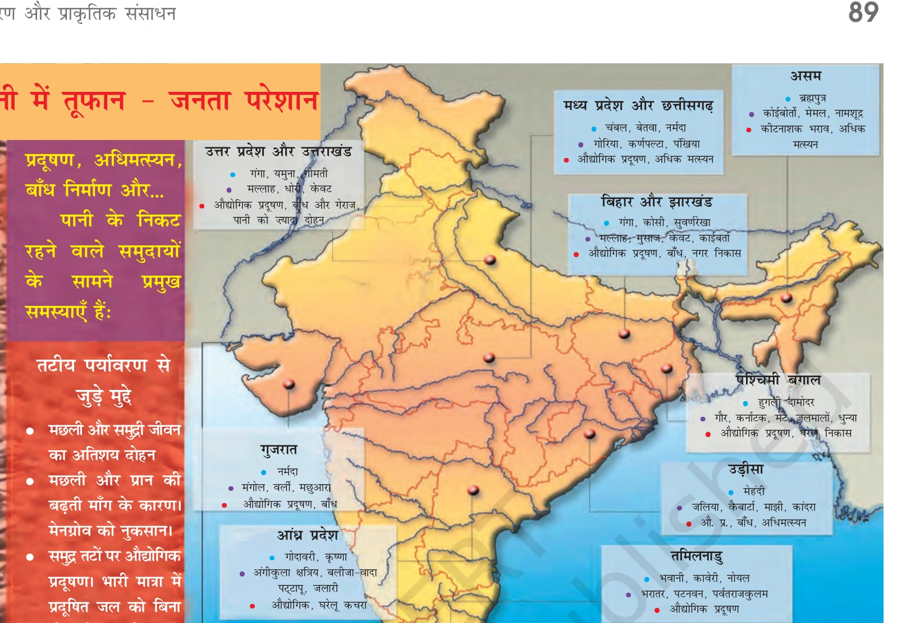
एनसीईआरटी कार्टून: क्योटो प्रोटोकॉल और ग्रीनहाउस गैस उत्सर्जन (NCERT पृष्ठ 89):
कार्टून में दर्शाया गया है कि विकसित देश अपने अत्यधिक औद्योगिकीकरण से उत्सर्जित धुएं (ग्रीनहाउस गैसों) का बोझ विकासशील देशों पर डालना चाहते हैं।
क्योटो प्रोटोकॉल एक अंतर्राष्ट्रीय समझौता है जो 1997 में क्योटो (जापान) में तय हुआ था:
- ग्रीनहाउस गैसों पर रोक: इसमें कार्बन डाइऑक्साइड, मीथेन, हाइड्रोफ्लोरोकार्बन जैसी गैसों के उत्सर्जन को घटाने का लक्ष्य निर्धारित किया गया।
- भारत की स्थिति (अगस्त 2002): भारत ने अगस्त 2002 में क्योटो प्रोटोकॉल पर हस्ताक्षर किए और इसका अनुमोदन किया।
- विकासशील देशों की छूट: भारत, चीन और अन्य विकासशील देशों को क्योटो प्रोटोकॉल की अनिवार्य बाध्यताओं से छूट दी गई थी क्योंकि औद्योगिकीकरण काल में उनका प्रति व्यक्ति उत्सर्जन बेहद कम था।
एनसीईआरटी पाठ्यपुस्तक वक्तव्य: "मैं समझ गया! पहले उन लोगों ने धरती को बर्बाद किया और अब जब हमारी विकास की बारी आई है, तो वे हम पर पाबंदियां लगाना चाहते हैं।"
पर्यावरण के क्षरण के खिलाफ केवल सरकारें ही काम नहीं कर रही हैं, बल्कि विश्व के विभिन्न हिस्सों में जन-आंदोलन और गैर-सरकारी संगठन (NGOs) भी पर्यावरण संरक्षण की लड़ाई लड़ रहे हैं।
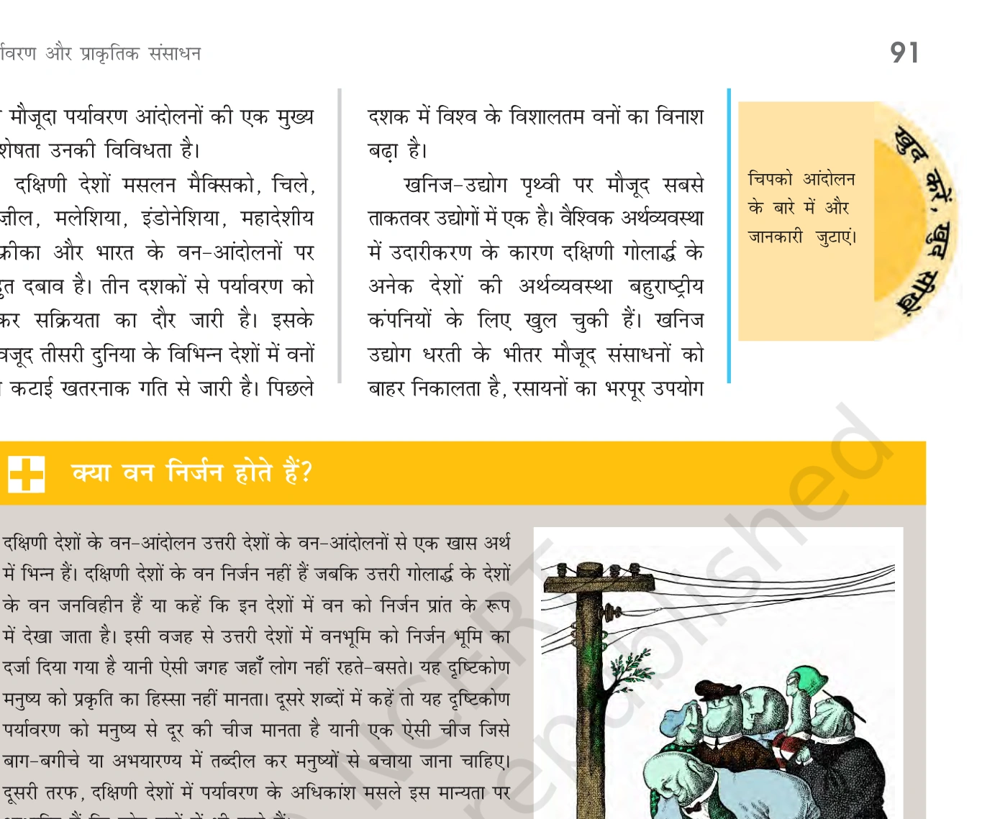
एनसीईआरटी वन और पर्यावरण आंदोलन (NCERT पृष्ठ 91):
दक्षिणी गोलार्द्ध (विकासशील देशों) के वन-आंदोलन उत्तरी गोलार्द्ध के आंदोलनों से भिन्न हैं। दक्षिणी देशों में वन जनसामान्य की आजीविका और आवास से जुड़े हैं।
- वन और संरक्षण आंदोलन: भारत, मेक्सिको, इंडोनेशिया और ब्राजील में जंगलों की व्यावसायिक कटाई के खिलाफ स्थानीय निवासियों और आदिवासियों के आंदोलन।
- खनन और बहुराष्ट्रीय कंपनियों के खिलाफ आंदोलन: कॉर्पोरेट खनन से जल स्रोतों और भूमि के विनाश के खिलाफ विरोध (जैसे बांग्लादेश के फुलबाड़ी में कोयला खनन का विरोध)।
- बांध विरोधी आंदोलन: नर्मदा बचाओ आंदोलन (भारत) और ऑस्ट्रेलिया में फ्रैंकलिन नदी पर बांध निर्माण का विरोध।
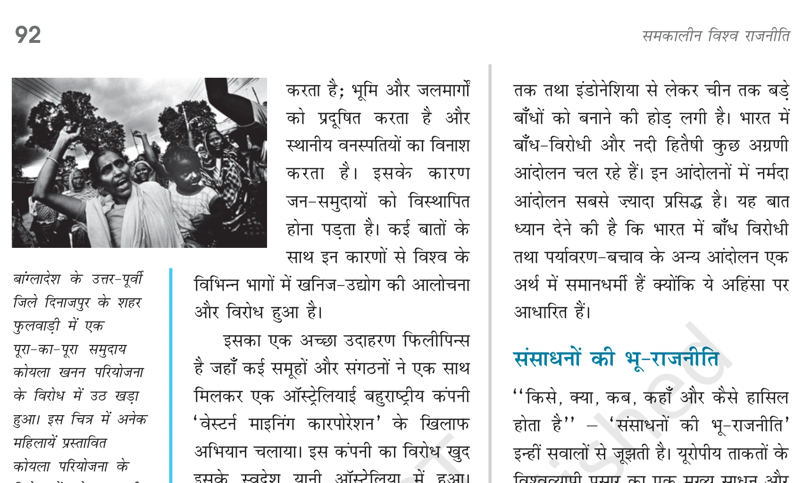
एनसीईआरटी चित्र: फुलबाड़ी (बांग्लादेश) कोयला खनन विरोध (NCERT पृष्ठ 92):
बांग्लादेश के दिनाजपुर जिले के फुलबाड़ी शहर में एक खुली कोयला खदान परियोजना के विरोध में पूरा समुदाय उठ खड़ा हुआ। चित्र में महिलाएं प्रस्तावित खदान के विरोध में प्रदर्शन कर रही हैं।
भारत ने पर्यावरण संरक्षण के लिए अंतर्राष्ट्रीय और राष्ट्रीय स्तर पर कई महत्वपूर्ण कदम उठाए हैं:
- 2001 का राष्ट्रीय ऊर्जा संरक्षण अधिनियम: ऊर्जा की बर्बादी को रोकने और नवीकरणीय ऊर्जा को बढ़ावा देने के लिए कानून।
- 2002 का विद्युत अधिनियम: नवीकरणीय ऊर्जा (सौर और पवन ऊर्जा) के इस्तेमाल को कानूनी बढ़ावा दिया गया।
- नेशनल सोलर मिशन (National Solar Mission): भारत ने सौर ऊर्जा उत्पादन को तेजी से बढ़ाया है।
- जी-20 (G-20) सम्मेलन में भारत की भूमिका: भारत ने विकासशील देशों के लिए वित्तीय सहायता और तकनीक हस्तांतरण (Technology Transfer) की मांग उठाई है।
विश्व राजनीति का एक बड़ा हिस्सा प्राकृतिक संसाधनों के कब्जे और नियंत्रण की होड़ से संचालित होता है। इसे संसाधन राजनीति (Resource Geopolitics) कहते हैं।
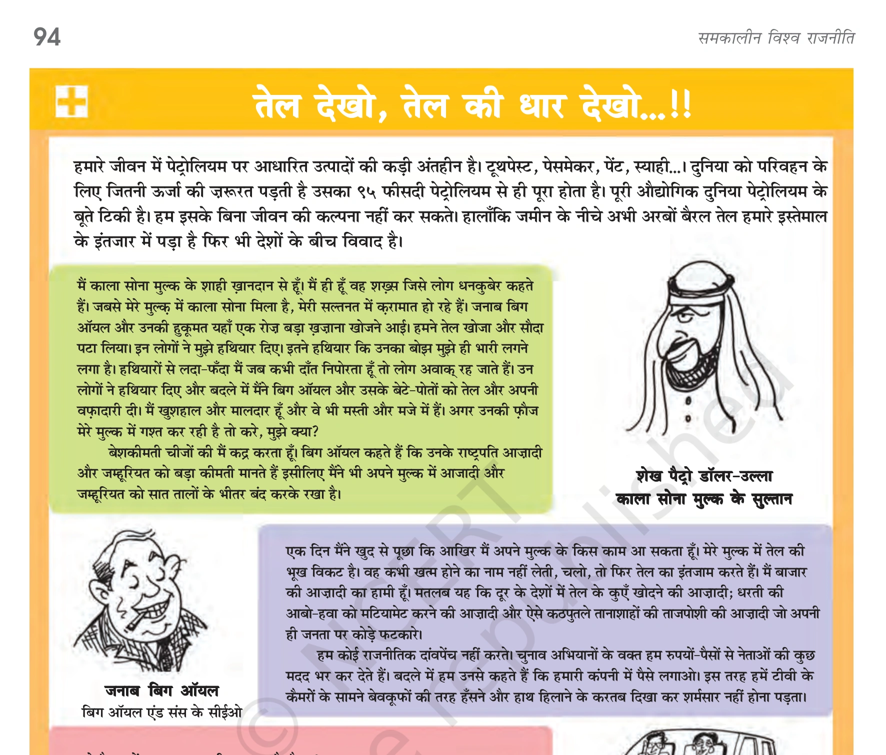
एनसीईआरटी पेट्रो-राजनीति कार्टून (NCERT पृष्ठ 94):
विश्व ऊर्जा का 95% हिस्सा पेट्रोलियम पर आधारित है। खाड़ी देशों और मध्य पूर्व में तेल संसाधनों पर नियंत्रण के लिए महाशक्तियों की सैन्य उपस्थिति और युद्ध (जैसे इराक युद्ध) पेट्रो-राजनीति का उदाहरण हैं।
- तेल का महत्व (Oil Geopolitics): दुनिया की ऊर्जा की ज़रूरतों का एक बहुत बड़ा हिस्सा तेल से पूरा होता है। पश्चिमी एशिया (खाड़ी देशों) के पास दुनिया का सबसे बड़ा तेल भंडार है, इसलिए यह क्षेत्र हमेशा संघर्षों का अड्डा बना रहता है।
- जल युद्ध (Water Wars): 21वीं सदी में अंतर्राष्ट्रीय सीमाओं से गुजरने वाली नदियों (जैसे नील नदी, जॉर्डन नदी, दजला-फ़रात नदी) के पानी के बंटवारे को लेकर देशों के बीच सैन्य संघर्ष की आशंका को 'जल युद्ध' कहा जाता है।
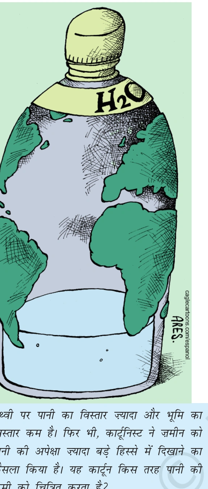
एनसीईआरटी जल युद्ध कार्टून (NCERT पृष्ठ 95):
21वीं सदी में जल संकट के कारण पड़ोसी देशों के बीच सैन्य फसाद और युद्ध की आशंका।
एनसीईआरटी पाठ्यपुस्तक वक्तव्य: "हमारे देश में भी राज्यों के बीच पानी को लेकर बड़े झगड़े-टंटे (जैसे कावेरी जल विवाद) चल रहे हैं। क्या अंतर्राष्ट्रीय विवाद भी ऐसे ही हैं?"
संयुक्त राष्ट्र संघ के अनुसार मूलवासी वे लोग हैं जो किसी भू-भाग पर प्राचीन काल से रहते आ रहे हैं और बाद में आई अन्य संस्कृतियों या औपनिवेशिक ताकतों द्वारा अधीनस्थ बना लिए गए।
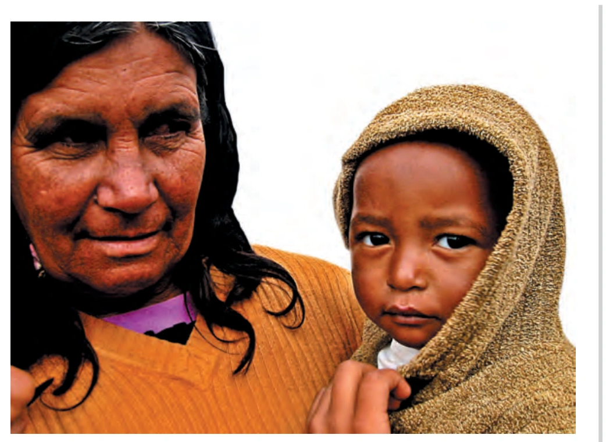
एनसीईआरटी मूलवासी अधिकार कार्टून (NCERT पृष्ठ 96):
विश्व भर में लगभग 30 करोड़ मूलवासी (जैसे मध्य और दक्षिण अमेरिका के रेड इंडियन, भारत के अनुसूचित जनजाति/आदिवासी, ऑस्ट्रेलिया के एबोरिजिन) हैं। इनकी मुख्य मांग अपने पारंपरिक संसाधनों और भूमि पर अधिकार की है।
एनसीईआरटी पाठ्यपुस्तक वक्तव्य: "आदिवासी जनता और उनके आंदोलनों के बारे में कुछ ज्यादा बातें क्यों नहीं सुनाई पड़तीं? क्या मीडिया और विकास की मुख्यधारा उन्हें अनदेखा कर देती है?"